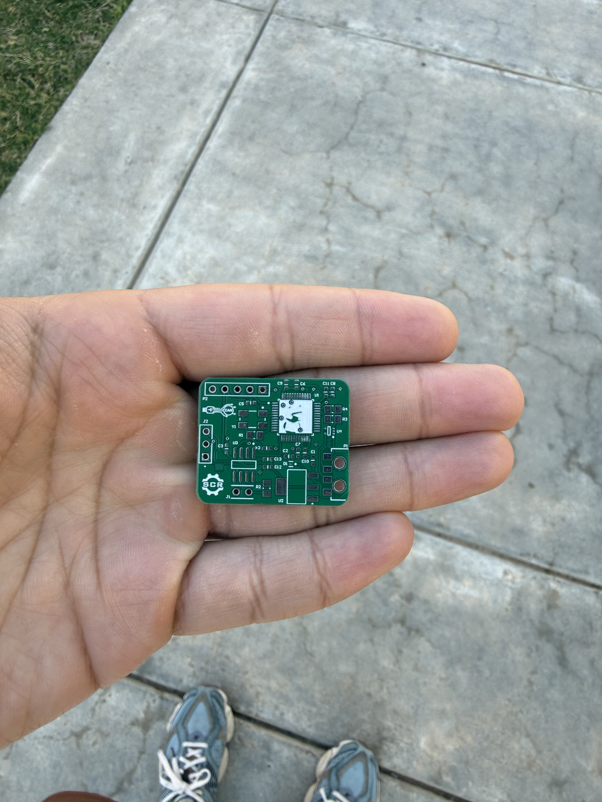

01
Hardware + Firmware
ESP32Pet
Tamagotchi-style handheld built on an ESP32 with an ST7735 LCD, physical buttons, EEPROM-backed persistent stats, and a custom PCB/case workflow.
ESP32 / C/C++ / KiCad
Electrical engineering student at the University of Oklahoma
Embedded hardware, PCB design, and research-driven engineering.
I design boards, build firmware, and work on robotics and ML projects where reliability, integration, and practical constraints matter as much as the prototype.

Focus
PCB layout, embedded systems, robot electronics, and hardware bring-up.
Current Work
Research at CQRT alongside robotics, firmware, and ML projects.
Open To
Internships, research roles, and engineering work in embedded systems.
Selected Work
A small set of case studies across embedded hardware, robotics, and research software.
01
Hardware + Firmware
Tamagotchi-style handheld built on an ESP32 with an ST7735 LCD, physical buttons, EEPROM-backed persistent stats, and a custom PCB/case workflow.
ESP32 / C/C++ / KiCad
02
Research + ML
Research project for OU that acts like a relevance-ranking engine for social media posts using active feedback, uncertainty sampling, and ML experimentation workflows.
Python / Active Learning / BERT / Data Systems
03
Robotics Hardware
Compact STM32-based CAN-to-USB interface board that lets the onboard PC communicate with distributed robot electronics over the CAN bus for IGVC.
STM32 / CAN Bus / USB / PCB Design
04
Embedded Computer Vision / IoT
Affordable home security camera system built around the ESP32-CAM AI-Thinker with Wi-Fi video streaming, motion detection, image capture, and remote viewing.
ESP32-CAM / Wi-Fi / ESPAsyncWebServer / IoT
05
Competition Robotics
Main control and interface board for the STORM robot, integrating subsystem I/O with onboard microcontroller logic for reliable robot control.
Digital/Analog I/O / PCB Design
Supporting work that adds range without competing with the main case studies.
Gesture recognition app with training, inference, and image-upload tooling.
Financial tracking web app that turns spending into a living fish tank visualization.
ESP32 project for uploading JPG images over Wi-Fi and displaying them on an ST7735 screen.
Raspberry Pi Pico-based IR sensing board for real-time detection, decoding, and transmission in STORM.
About
I'm Shawn Agarwal, an Electrical Engineering student at the University of Oklahoma focused on embedded hardware, PCB design, and robotics systems. I like projects where board-level decisions, firmware, and system integration all matter.
My background spans competition robotics, undergraduate research, and applied ML work, with the strongest through-line being practical engineering under real constraints: sensing, communication, power, and reliable hardware bring-up.
KiCad, Altium, C/C++, Python, and MATLAB.
Experience
Currently working under Dr. Paik on quantum-related research involving thin films, device-oriented experiments, and hands-on engineering analysis.
Built distributed robot electronics and CAN-connected subsystems for autonomous ground vehicle development.
Helped students solve technical math problems and communicate quantitative ideas clearly and effectively.
Worked under Dr. Wolfgang on data-driven engineering and machine learning projects focused on intelligent systems and research-based technical problem solving.
Designed and supported electronics, sensing, power, and control boards used in team robotics systems.
Contact
Open to internships, research roles, and engineering work in embedded systems and robotics.